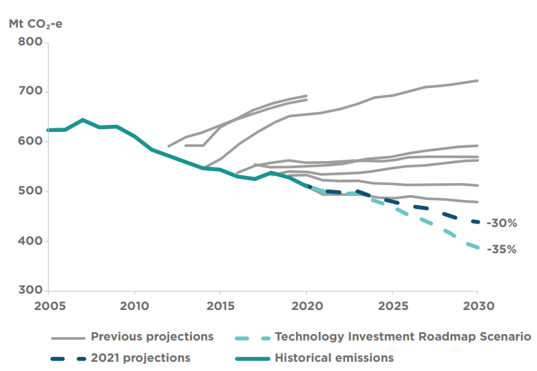

AUSTRALIA’S NATIONALLY DETERMINED CONTRIBUTION – COMMUNICATION 2021 1
Content contained herein should be attributed as:
Australia’s Nationally Determined Contribution Communication 2021,
Australian Government Department of Industry, Science, Energy and Resources.
Disclaimer
The Australian Government as represented by the Department of Industry, Science, Energy and Resources has exercised due care and skill in the preparation and compilation of the information and data in this publication. Notwithstanding, the Commonwealth of Australia, its officers, employees, or agents disclaim any liability, including liability for negligence, loss howsoever caused, damage, injury, expense or cost incurred by any person as a result of accessing, using or relying upon any of the information or data in this publication to the maximum extent permitted by law. No representation expressed or implied is made as to the currency, accuracy, reliability or completeness of the information contained in this publication. The reader should rely on their own inquiries to independently confirm the information and comment on which they intend to act. This publication does not indicate commitment by the Australian Government to a particular course of action.
By this submission, Australia communicates its updated and enhanced first Nationally Determined Contribution (NDC) under the Paris Agreement.
Australia adopts a target of net zero emissions by 2050. This is an economy-wide target, covering all sectors and gases included in Australia’s national inventory.
In order to achieve net zero by 2050, Australia commits to seven low emissions technology stretch goals - ambitious but realistic goals to bring priority low emissions technologies to economic parity with existing mature technologies.
Australia reaffirms its ambitious economy-wide target to reduce greenhouse emissions to by 26 - 28% below 2005 levels by 2030, and will exceed it by up to 9 percentage points. Australia’s emissions projections 2021 demonstrate that we are on track to reduce emissions by up to 35% below 2005 levels by 2030.1
The details of Australia’s 2030 and 2050 targets and low emissions stretch goals are set out in Tables 1–3, along with the information for clarity, transparency and understanding in accordance with decision 4/CMA.1 (see Table 4).
Emissions reduction targets must go hand-in-hand with real outcomes. Australia has a strong track record of setting emissions reduction targets that are both ambitious and achievable, and of holding ourselves accountable for exceeding them. Australia met and exceeded its first and second commitment period targets under the Kyoto Protocol and its 2020 target under the Convention. We are on track to overachieve against our 2030 target.
Australia’s performance against its 2030 target, and our commitment to our low emissions technology economic stretch goals place us on a trajectory to achieving net zero emissions by 2050. Australia has a Long Term Emissions Reduction Plan which details how we will achieve net zero emissions by 2050.
Projected emissions are lower than all previous projections, and Australia has outperformed all previous projections. Since 2018, Australia’s forecast position against the 2030 target has improved by 843 Mt CO₂-e, equivalent to taking all of Australia’s 14.9 million passenger vehicles off the road for more than 19 years.
The improvement in the 2021 emissions projections reflects the impact of:
$1.6 billion in new technology-focused emissions reduction measures in the Australian Government’s 2021–22 Budget
Australia’s world leading uptake of renewables
the latest forecasts, including on energy consumption.

Australia’s pathway to net zero is summarized in Section II of this communication and detailed in Australia’s whole of economy Long Term Emissions Reduction Plan.
Comprehensive modelling and analysis has been undertaken to inform Australia’s whole of economy Long Term Emissions Reduction Plan. The scenarios examined through this modelling illustrate that getting new energy technologies to parity with existing higher emissions alternatives will bring net zero within reach.
Australia will close any remaining gap to net zero consistent with the principles set out in the Plan, and will conduct five yearly ‘review and refine’ cycles to take stock of progress towards net zero, ensuring our policies are calibrated to ensure its achievement, including by identifying additional emission reduction opportunities, reflecting the latest technology advances, international developments, and other factors.
Australia will also conduct regular reviews of the impacts of our policies on our regions, energy prices, jobs and other economic indicators. Under the Technology Investment Roadmap, Australia will also report annually on progress towards the technology stretch goals and the investments the Government is making to support their achievement.
|
Review |
Scope of Review |
Timing |
|
Paris Agreement – Review and refine cycle |
Comprehensive reviews of domestic emissions reduction policies, emissions trends and progress in reducing emissions, to inform the setting of upcoming Nationally Determined Contributions and any policy adjustments needed to maintain a pathway towards net zero emissions by 2050. |
Every five years, to coincide with Australia setting its five yearly NDCs under the Paris Agreement. |
|
Low Emissions Technology Statements |
Reports on progress towards achieving Australia’s technology stretch goals and the investments made by the Government to meet them. May identify additional technology goals. |
Annual. |
|
Emissions Reduction Policy Impact assessments |
Domestic reviews to report on the impacts on households and regions of Commonwealth, State and Territory emissions reduction policies. These reviews will report against a range of key economic indicators such as energy prices, employment (particularly regional employment), export volumes and trends, investment trends and growth in national income. |
Every five years, with the first to be undertaken in 2023. |
The details of Australia’s 2050 target are provided in Table 1. Australia will track progress towards net zero emissions in its Biennial Transparency Reports under the Paris Agreement, on the basis of national emissions reported in its National Inventory Document.
Section III of this communication provides a summary of Australia’s low emissions technology stretch goals and the Government’s approach to supporting their achievement. Achieving these goals is fundamental to reaching net zero emissions across the economy. Full details are set out in the Government’s Low Emissions Technology Statement 2021 (LETS 2021).
Australia’s whole-of-economy Long Term Emissions Reduction Plan is our plan for achieving net zero emissions by 2050 and positioning our economy to seize the opportunities of the global shift to lower emissions. The Plan is focused on ‘the how’, on practical action to convert ambition into achievement, because a target without a Plan is meaningless.
Australia’s plan has the wellbeing and prosperity of Australia’s regional communities at its core. It recognises that trends in technology and consumer preferences will drive a global shift towards low emissions energy sources and new energy technologies. The Government will partner with Australian communities and businesses to provide the support they need to benefit from these shifts by capturing new markets and economic opportunities.
Five core principles guided the development of our Plan and Australia’s suite of emissions reduction policies. Taken together, these principles will ensure Australia’s shift to a net zero emissions economy will be effective, fair and equitable, and that no sector of the economy will carry a disproportionate burden.
We will deploy technology not taxes. Our focus is on reducing the cost of low emissions energy sources, not raising the cost of existing approaches. Our approach will not impose new costs on households or businesses, enabling Australia to achieve our emissions reduction targets while growing our economy and jobs.
The Government will expand choices, not mandates, recognising that widespread deployment of mature technologies will be led by the private sector with an enabling role for government, as households and businesses adopt new technologies where it makes sense for them to do so.
Achieving the global Paris goals requires transformative technologies to be deployed at scale across all sectors of the economy. Our priority must be to drive down the cost of a range of technologies to bring them to commercial parity. This is the objective of Australia’s Technology Investment Roadmap.
We will protect the competitiveness of our businesses and industries, and the livelihoods of Australians and keep energy prices down with affordable and reliable power.
Transparency is essential to convert ambition into achievement. Australia will be accountable for progress under our Plan, setting the global benchmark for transparency and accountability in our emissions reporting. Globally, Australia will continue to advocate for all major economies to be held to the same high standards of transparency.
The plan focuses not only on reducing our own emissions, but also on how Australia will play a leadership role in meeting the Paris Agreement goals through our low emissions energy exports and contributions to innovation. Importantly, Australia will continue supplying the energy exports in demand in the global economy so long as they are needed to support the economies of our trading partners. Through these efforts, we will partner with countries in our region to ensure access to the technologies, finance and clean, affordable energy needed to transition their economies and achieve their broader development goals.
This recognizes that global pathways to achieving the Paris goals must also deliver the economic development needs and aspirations of many countries. A technology-led approach is the only viable and realistic way to balance these objectives. Australia is embracing this leadership role because a renewed global effort is needed to develop low emissions technologies so they are globally accessible, affordable and scalable.
Australia’s Plan has been informed by detailed modelling and analysis of potential impacts on our economy, with a particular focus on the importance of low cost, clean technologies. Achieving net zero emissions by 2050 will depend on our success in reducing the costs of low emissions technologies and accelerating their deployment at scale across all sectors.
Australia’s policies are focused on the technologies that can open these critical pathways.
A portfolio of technologies will be needed, including cross-cutting ‘platform’ technologies (like hydrogen) and technologies tailored to specific and niche applications within individual sectors.
By investing in research, development and demonstration, the government will, in partnership with the private sector, drive down the cost of these key technologies and achieve their economic stretch goals, unlocking their use across the economy. The Technology Investment Roadmap is the cornerstone of this approach.
The Australian Government’s Technology Investment Roadmap establishes an enduring process to accelerate the development and commercialisation of new and emerging low emissions technologies. The aim is to drive priority technologies to cost parity with higher emissions alternatives.
Priority low emissions technologies and accompanying economic stretch goals are identified in annual Low Emissions Technology Statements. Economic stretch goals are ambitious but realistic goals representing the point at which each priority technology will become cost competitive with existing higher emitting technologies, leading to adoption at large scale across the economy, significantly reducing emissions without additional costs. Australia is committed to achieving the seven economic stretch goals, and will track progress towards them in each Biennial Transparency Report on the basis described in table 2 below, informed by an impact evaluation framework. Meeting the economic stretch goals will result in significant emission reductions. Accelerated deployment of the priority technologies and enabling infrastructure takes us about 40 per cent of the way to net zero emissions.
These technologies will also underpin further emissions reductions in Australia resulting from global low emissions technology trends, like electric vehicles powered by zero emissions electricity. These global trends are estimated to contribute up to a further third of the required emissions reductions for Australia to reach net zero emissions.
These technologies are also important for addressing emissions internationally. They address emissions in sectors that account for 90 per cent of global emissions, or around 45 billion tonnes CO2-e annually.
|
Priority technology stretch goal |
Potential pathway |
Expected timeframe for achievement |
|
Clean hydrogen production under $2/kg |
Steam methane reforming with CCS |
2025–2030 |
|
|
Renewable electrolysis |
2028–2035 |
|
Ultra low-cost solar – solar electricity generation at $15/MWh |
Large scale solar |
2030–2035 |
|
Energy storage – electricity from storage for firming under $100/MWh |
Lithium-ion batteries |
2025–2030 |
|
Low emissions steel production under $700/t (based on the long run marginal cost) |
New build direct iron reduction plant using hydrogen |
2030–2040 |
|
Low emissions aluminium production under $2,200/t (based on the long run marginal cost) |
Renewable electricity and inert anodes |
2035–2040 |
|
Carbon capture and storage – CO2 compression, hub transport and storage under $20/t of CO2 |
Expected deployment timeframe |
2025–2030 |
|
Soil carbon measurement under $3/ha/year |
Advancement in proximal sensing, modelling and remote sensing technologies |
2025–2030 |
The Australian government will invest at least $20 billion in low emissions technologies by 2030, to drive over $80 billion of total public and private investment over the decade. This investment will support 160,000 new jobs across Australia.
The Australian Government is continuing to leverage investment in clean and low emissions energy through the Clean Energy Finance Corporation (CEFC), which is the world’s largest government owned green bank, and the Australian Renewable Energy Agency (ARENA). Through ARENA and CEFC, Australia has already mobilized over $10.8 billion in funding to support projects with a total value of almost $38 billion.
The new commitments contained in this 2021 communication are additional to the ambition communicated in Australia’s 2015 and 2020 NDC communications. This communication should be read alongside the commitments contained in Australia’s 2020 communication, which set out an update on newly announced policies and measures, and provides a snapshot of progress on policies and measures outlined in the 2015 NDC communication, including Australia’s commitment to transparency and to advancing adaptation and resilience.
Australia has a strong history of investing and taking action on climate adaptation to build resilience and adapt both at home and in our region. Historically over 70 percent of Australia’s bilateral and regional climate finance is focused on climate resilience and adaptation, reflecting key priorities for our region.
Australia’s new National Climate Resilience and Adaptation Strategy sets out what the Australian Government will do to support efforts across all levels of government, business and the community, to better anticipate, manage and adapt to the impacts of climate change. The Strategy sets out three interlinked objectives to ensure Australians can better protect our natural assets, build community resilience and generate economic opportunities. The Strategy also sets the path to deeper cooperation with our Indo-Pacific and international partners, and the global community. By working together, we can share our expertise and experience to better target our investments and the maximise benefits.
Australia has delivered the adaptation communication committed to in our 2020 NDC. Australia’s adaptation communication showcases our ongoing action and progress to the UNFCCC. Australia’s adaptation action is built on partnerships. Australia will continue to make strong contributions to global climate science and sharing our expertise, experiences and skills across the globe toward stronger adaptation and resilience outcomes.
Tables 1–3: Australia’s Nationally Determined Contribution
|
1.1 |
Quantifiable information on reference point |
||
|
Target |
26 to 28 per cent below 2005 levels by 2030, implemented as an emissions budget covering the period 2021–2030 |
Net zero emissions by 2050 |
|
|
1.1.1 |
Reference year or other starting point |
Emissions budget for the period 2021–2030 |
Australia’s net emissions in the most recently available year, published in the annual National Inventory Report. |
|
1.1.2 |
Quantifiable information on the reference indicators |
The indicative value of the emissions budget is 4764 Mt C02-e, corresponding to the 28% target, as published in Australia’s emissions projections 2021. |
Australia’s net emissions in 2019, were 529.3 million tonnes CO2e, as reported in the National Inventory Report submitted 15 April 2021 (TableA3.1, Annex 3, Volume 3). According to the latest Quarterly Update of Australia’s Greenhouse Gas Inventory, emissions in the year to March 2021 were 494.2 Mt CO2-e. |
|
1.1.3 |
If a Least Developing Country (LDC) or Small Island Developing State (SIDS) info on strategies, actions |
Not applicable. |
|
|
1.1.4 |
Value of target relative to the reference indicator |
Australia’s 2030 target (28%) is equivalent to its reference indicator (emissions budget). |
Net zero emissions by 2050 |
|
1.1.5 |
Data used in quantifying the reference point |
Quantification of the reference indicator is based on data reported in Australia’s emissions projections, and in its annual National Inventory Report. |
Quantification of the reference indicator is based on data reported in Australia’s annual National Inventory Report. |
|
Estimates apply the 100 year Global Warming Potentials (GWPs) as contained in the IPCC Fifth Assessment Report |
|||
|
1.1.6 |
Updates to the values of the reference indicators |
The value may be updated to reflect inventory improvements, including additional sources and recalculations resulting from continuous methodological improvements, and updates to Australia’s projections. |
The value may be updated to reflect inventory improvements, including additional sources and methodological improvements. |
|
1.2 |
Time frames |
||
|
1.2.1 |
Time frame for implementation |
2021–2030 |
2021–2050 |
|
1.2.2 |
Single-year or multi-year target |
Multi-year budget |
Single-year |
|
1.3 |
Scope and coverage |
||
|
1.3.1 |
General description of the target |
Absolute economy-wide emissions reduction, as an emissions budget covering 2021–2030 |
Absolute economy-wide emissions target expressed as a single-year target |
|
1.3.2 |
Sectors, gases, categories and pools covered by the target |
Carbon dioxide (CO2); Methane (CH4); Nitrous oxide (N2O); Hydrofluorocarbons (HFCs); Perfluorocarbons (PFCs); Sulphur hexafluoride (SF6); Nitrogen trifluoride (NF3) All sector, categories and carbon pools, as defined by the IPCC 2006 guidelines, and additional sources reported in the annual National Inventory Report. |
|
|
1.3.3 |
Complete and continuous coverage |
Australia has included all categories of anthropogenic emissions or removals in its NDC. No source, sink, or activity that was included in Australia’s 2020 target under the Convention has been excluded. |
|
|
1.3.4 |
Mitigation co-benefits |
Not applicable. |
|
|
1.4 |
Assumptions and methodological approaches for emissions estimates and accounting |
||
|
1.4.1 |
Accounting for emissions and removals |
Australia assesses progress towards its 2030 target by comparing cumulative net emissions over the period 2021–2030 with the emissions budget for the period. |
Australia will account for its 2050 target on the basis of total net national emissions reported in its National Inventory Document for the year 2050, submitted under the Paris Agreement. |
|
Australia will make corresponding adjustments for any internationally transferred mitigation outcomes should the Australian Government authorize any for use towards NDCs. |
|||
|
1.4.2 |
Accounting for the implementation of policies and measures or strategies |
Not applicable. |
|
|
1.4.3 |
IPCC methodologies and metrics used and existing approaches |
Australia intends to apply 100 year Global Warming Potentials (GWPs) as contained in inventory reporting guidelines, currently IPCC Fifth Assessment Report 100 year GWPs, or as otherwise agreed. The estimates of emissions and removals used in accounting for the NDC will be those reported in the Inventory, which will apply the IPCC 2006 Guidelines, or subsequent version or refinement as agreed by the CMA, and nationally appropriate methods consistent with that guidance and informed inter alia by the IPCC 2019 Refinement and IPCC 2013 Wetlands Supplement. |
|
|
1.4.4 |
Sector, category or activity specific |
Not applicable. |
|
|
1.4.5 |
Natural disturbances |
Australia will address emissions and subsequent removals from natural disturbances in accounting for its NDC. The carbon stock changes from natural disturbances are included in the national emissions totals, as described in Australia’s National Inventory Report (15 April 2021) consistent with approaches set out in the IPCC 2006 guidelines and the 2019 IPCC Refinement. The approach will be reported in the National Inventory Document. |
|
|
1.4.6 |
Harvested wood products; |
Australia will use a stock-change approach consistent with the IPCC 2006 Guidelines to estimate emissions from Harvested Wood Products, consistent with the 2006 IPCC Guidelines and paragraph 56 of the Annex to decision 18/CMA.1. The methodology will be described in detail in the National Inventory Document. |
|
|
1.4.7 |
Effects of age-class structure in forests; |
Not applicable. |
|
|
1.4.8 |
Construction of the reference indicators |
The emissions budget for the 2030 target is calculated using a straight-line trajectory which takes a linear decrease from 2020 to 2030. This trajectory begins from Australia’s 2020 target (5 per cent below 2000 levels), and finishes at 28 per cent below 2005 levels in 2020. The area under the trajectory for the period 2021–2030 is the emissions budget for the 2030 target. |
The reference indicator for the 2050 target is net national greenhouse gas emissions in the most recently available year, as published in the National Inventory Report annually. The definitions, data sources and models used to estimate net emissions are those described in the National Inventory Document. |
|
1.4.9 |
Non greenhouse-gas components; |
Refer to Table 2. |
|
|
1.4.10 |
Climate forcers, as applicable |
Not applicable. |
|
|
1.4.11 |
Intended use of voluntary cooperation under Article 6 of the Paris Agreement |
Should Australia decide to cooperative approaches under Article 6 of the Paris Agreement towards achievement of its NDC or to authorize the use of internationally transferred mitigation outcomes towards the NDCs of other Parties, it would report on such use or authorization through its biennial transparency reports and consistent with any guidance adopted under Article 6. |
|
Table 2: Priority Low Emissions Technology Economic Stretch Goals
|
2.1 |
Quantifiable information on reference point |
|||||||
|
Priority technology |
Clean Hydrogen |
Ultralow-cost solar |
Energy Storage |
Low emissions steel |
Low emissions aluminum |
Carbon capture and storage |
Soil Carbon measurement |
|
|
Target |
Clean hydrogen production under $2 per kilogram |
Solar electricity generation at $15/ MWh |
Electricity from storage for firming (available on demand for 8 hours or more) at under $100/MWh |
Low emissions steel production under $700 per tonne (based on the marginal cost) |
Low emissions aluminium under $2,200 per tonne (based on the marginal cost) |
CO2 compression, hub transport and storage under $20 per tonne of CO2 |
$3 per hectare per year |
|
|
2.1.1 |
Reference indicator |
Cost of clean hydrogen production |
Levelised cost of solar electricity |
Cost of battery storage |
Cost of low emissions steel |
Cost of low emissions aluminium |
Cost of CO2 compression, hub transport and storage |
Cost of soil carbon measurement per hectare per year |
|
Reference year or other starting point |
Calendar year 2021 |
Financial year 2020–21 |
Financial year 2020–2021 |
2024 |
2024 |
2024 |
Calendar year 2020 |
|
|
2.1.2 |
Quantifiable information on the reference indicators |
Current clean hydrogen production costs range from $1.7 – $10.7 /kgH2 driven by regional variances and production method (2021 State of Hydrogen Report) |
Current LCOE for large scale solar PV estimated to be $49–$72 in 2020 (CSIRO, GenCost 2020–21) |
Cost of battery storage (8 hour) is estimated to be $421/kWh (CSIRO, GenCost 2020–21) |
Production of low emissions steel is still at an early stage globally and in Australia. Reference indicator will be based on data reported in Australia’s annual Low Emissions Technology Statements |
Production of low emissions aluminium is still at an early stage globally and in Australia. Reference indicator will be based on data reported in Australia’s annual Low Emissions Technology Statements |
Reference indicator will be based on data reported in Australia’s annual Low Emissions Technology Statements |
Soil carbon measurement for Emissions Reduction Fund projects cost around $30 per hectare per year |
|
2.1.3 |
If a LDC or SIDS info on action |
Not applicable. |
||||||
|
2.1.4 |
Target relative to the reference indicator |
As stated in the target cell above |
As stated in the target cell above |
As stated in the target cell above |
As stated in the target cell above |
As stated in the target cell above |
As stated in the target cell above |
As stated in the target cell above |
|
2.1.5 |
Data used in quantifying the reference indicator |
Annual State of the Hydrogen Report; analysis from research or commercial providers as available. |
CSIRO annual GenCost reports; AEMO; analysis from research or commercial providers as available. |
CSIRO annual GenCost reports; AEMO; analysis from research or commercial providers as available. |
Analysis from research or commercial providers as available. |
Analysis from research or commercial providers as available. |
Analysis from research or commercial providers as available. |
Results of Emissions Reduction Fund auctions and analysis from research or commercial providers as available |
|
2.1.6 |
Updates to the values of the reference indicators |
The value of the reference indicator for each stretch goal may be updated to reflect improved data or methodologies, informed by an impact evaluation framework developed for the Technology Investment Roadmap. This will be clearly and transparently reported in Australia’s Biennial Transparency reports under the Paris Agreement and annual Low Emissions Technology Statements. The impact evaluation framework is detailed in the Low Emissions Technology Statement 2021 and will be continually reviewed and refined in line with the Roadmap’s adaptive approach. |
||||||
|
2.2 |
Time frames |
|||||||
|
2.2.1 |
Time frame for implementation |
2020 to 2025–2030 (for steam methane reforming with CCS) and 2028–2035 (for renewable electrolysis) *economically feasible now, but subject to offtake agreements, development approvals and adoption of a hydrogen Guarantee of Origin scheme. |
2021 to 2030–2035 |
2020 to 2025–2030 |
2020 to 2030–2040 *economically viable in the late 2020s, but subject to capital development cycles |
2020 to 2035–2040 |
2020 to 2025–2030 (Expected deployment timeframe) *subject to offtake agreements and development approvals |
2020 to 2025–2030 |
|
A range is given for the timeframe for achieving each stretch goal under a ‘high technology’ scenario, with the start representing the earliest date the stretch goal could be met. Confidence in reaching the stretch goal increases towards the end of the range. |
||||||||
|
2.2.2 |
Single-year or multi-year |
Multi-year |
Multi-year |
Multi-year |
Multi-year |
Multi-year |
Multi-year |
Multi-year |
|
2.3 |
Scope and coverage |
|||||||
|
2.3.1 |
General description of Target |
Economic stretch goal |
Economic stretch goal |
Economic stretch goal |
Economic stretch goal |
Economic stretch goal |
Economic stretch goal |
Economic stretch goal |
|
2.3.2 |
Sectors, gases, categories and pools covered |
Energy; Industrial processes and product use |
Energy |
Energy |
Industrial processes and product use |
Industrial processes and product use |
Energy; Industrial processes and product use |
Land-use, Land-use change and forestry |
|
2.3.4 |
Complete and continuous coverage |
Not applicable. These targets are economic stretch goals, all emissions reductions will be accounted for under Australia’s 2030 and 2050 targets. |
||||||
|
2.3.5 |
Mitigation co- benefits |
Not applicable. |
||||||
|
2.4 |
Assumptions and methodological approaches for estimates and accounting |
|||||||
|
2.4.1 |
Construction of the reference indicators |
Details for each priority technology economic stretch goal below. Clean hydrogen: The A$2 per kilogram stretch goal is based on the average cost of clean hydrogen at the site of production. Clean hydrogen includes hydrogen produced via electrolysis using renewable energy, hydrogen produced from fossil fuels with substantial CCS and all other clean hydrogen methods of production, including pyrolysis or other emerging production methods (i.e. bioenergy). Australia notes that clean hydrogen production under $2 per kg requires clean electricity at around $20 per MWh, however to increase Australia’s competitiveness in hydrogen exports, production costs closer to $1 per kg will ultimately be required, necessitating lower electricity costs. The target timeframe reflects two different deployment pathways. Deployment of hydrogen production from steam methane reforming with CCS in Australia is subject to securing low cost gas, offtake agreements and development approvals. Should these be secured, the clean hydrogen stretch goal could be met as early as 2025–2030. Under the other deployment pathway, steep reductions in the costs of renewable electricity and electrolysis could make the stretch goal feasible between 2028–2035 (for production of clean hydrogen with electrolysis). Annual low emissions technology statements and State of Hydrogen reports will track progress against this cost goal. Ultra-low cost solar: The $15/MWh stretch goal for ultra-low cost solar has been set taking into consideration current and projected cost of utility scale solar electricity, and alignment with international benchmarks. The stretch goal assumes utility scale solar PV without network or firming costs, and without subsidies. Other assumptions include: 25% capacity factor, 5.9%WACC, and 25 year operating life. The target timeframe provided is based on utility scale solar technology. Note that the timeframe for achieving the ultralow-cost solar stretch goal does not yet underpin the electricity price assumptions used for achieving clean hydrogen, energy storage, and low emissions steel and aluminum stretch goals. Energy Storage: The electricity from storage for firming stretch goal – under $100/MWh – is consistent with an average wholesale electricity price under $70/MWh and represents the cost at which low emissions electricity, available on demand for eight hours or more, will be competitive with conventional mid- merit gas generation in the National Electricity Market (NEM). AEMO’s 2019 Wholesale Electricity Market: Electricity Statement of Opportunities (page 18) defines ‘mid-merit capacity’ as Scheduled Generators that operate between 10% and 70% of the time. The stretch goal represents the capacity cost plus the short run marginal cost of mid-merit generation. Input price assumptions for electricity prices were based on CSIRO GenCost report 2019–20. Commodity forecasts and activity levels informed by a number of publications and data from government agencies and other bodies, including: the Department of Industry, Innovation and Science, Energy and Resources, the Australian Bureau of Agricultural and Resource Economics and Sciences (ABARES), and the Australian Energy Market Operator (AEMO). Low emissions steel: The $700 per tonne stretch goal is based on bottom up analysis of current production costs for steel and an assumed profit margin. The figure reflects marginal costs and excludes capital costs. Significant changes in raw material costs may require the stretch goal to be updated over time. While the stretch goal is focused on steel production, the Government recognizes there are opportunities to apply low emissions technologies to upstream processes such as iron ore mining and beneficiation. The high uptake scenario for low emissions steel produced with hydrogen and direct iron reduction could be economically viable as early as 2030, but subject to capital development cycles. Low emissions aluminium: The $2,200 per tonne stretch goal is based on bottom up analysis of current production costs for aluminium and an assumed profit margin. The figure reflects marginal costs and excludes capital costs. Significant changes in raw material costs may require the stretch goals to be updated over time. While the stretch goal focuses on aluminium production, the Government recognises there are opportunities to apply low emissions technologies to upstream processes such as bauxite mining and alumina refining. In a high technology scenario, with cheap firmed renewable electricity and deployment of inert anodes, low emissions aluminium production could be cost competitive on a marginal cost basis with current aluminium production methods as soon as 2035. This would be driven by substantial cost reductions in firmed renewable electricity. Carbon capture and storage: The $20 per tonne of CO₂ stretch goal covers CO2 compression, hub transport and storage, but does not cover capture processes, noting the cost of capture technologies varies between applications and depends on factors such as the relative concentration of CO2 for different industrial processes. The stretch goal assumes CO₂ is transported within a hub distance of less than 100 km to suitable reservoirs. Achieving a stretch goal of under $20 per tonne would position CCS to be competitive over the long term with other forms of abatement supported by Australia’s Emissions Reduction Fund. Under a high technology scenario, CCS could be deployed as early as 2025, subject to securing offtake agreements and development approvals. Soil carbon measurement: The soil carbon measurement stretch goal time range was set based on consultations with industry. Based on a high technology uptake scenario, advancements in proximal sensing, simulation modelling and remote sensing technologies could see the stretch goal of under $3 per hectare per year reached as early as 2025. As of 2020, soil carbon measurement for Emissions Reduction Fund projects were estimated at around $30 per hectare per year (CSIRO estimates based on a land area of 300 hectares; estimates could be lower for larger areas). |
||||||
|
2.4.2 |
Accounting for emissions and removals |
Not applicable. |
||||||
|
2.4.3 |
IPCC methodologies and metrics |
Not applicable. |
||||||
|
2.4.4 |
Sector-, category- or activity specific, as applicable |
Not applicable. |
||||||
|
2.4.5 |
Natural disturbances |
Not applicable. |
||||||
|
2.4.6 |
Harvested wood products |
Not applicable. |
||||||
|
2.4.7 |
Age-class structure in forests |
Not applicable. |
||||||
|
2.4.8 |
Non greenhouse-gas components, as applicable |
Not applicable. |
||||||
|
2.4.9 |
Climate forcers, as applicable |
Not applicable. |
||||||
|
2.4.10 |
Article 6 |
Not applicable. |
||||||
Table 3: Fair and Ambitious Contribution, Contribution to Article 2, Planning Processes Information and Article 4.
|
3.1 |
How the Party considers that its nationally determined contribution is fair and ambitious in the light of its national circumstances; |
|
|
3.1.1 |
A fair and ambitious contribution |
Australia’s Nationally Determined Contribution is an ambitious, fair and responsible contribution to global efforts toward meeting the objective of the UNFCCC and the goals of the Paris Agreement. Australia’s target of net zero emissions by 2050 represents significant ambition for Australia. This target is underpinned by robust policies which will maximize abatement both in Australia, and globally, to ensure Australia and our partners can meet this timeframe, while ensuring continued economic growth, prosperity and secure and reliable energy systems. Australia’s 2030 target is an important benchmark towards achieving net zero by 2050. Australia’s 2030 target represents a halving of emissions per person in Australia, or 74% reduction in emissions per unit of GDP. Australia’s 2021 emissions projections show Australia will more than halve emissions per person and achieve a 77–81% reduction in emissions per unit of GDP by 2030. The target represents serious and ambitious effort for Australia and takes account of Australia’s unique national circumstances, including a growing population and our role as a leading global resources and agricultural commodities provider. The target is a floor on Australia’s 2030 ambition. We intend to overachieve on this target and newly released emissions projections show Australia is on track to meet and beat our 2030 target without relying on past overachievement. In addition to this target, Australia’s low emissions technology economic stretch goals are ambitious but realistic goals to bring priority low emissions technologies to economic parity with existing high emissions technologies. Achieving these priority low emissions technology stretch goals will maximize abatement potential for Australia and our partners. These technologies have been specifically identified as those which have the highest abatement and economic potential in areas of comparative advantage for Australia. Accelerated deployment of the 6 priority technologies and enabling infrastructure could contribute over 230 million tonnes CO₂-e in annual emissions reductions in Australia by 2040, compared to 2020 levels. This represents approximately 45% of Australia’s total emissions in 2020. These priority low emissions technologies will offer emissions reduction opportunities across Australia’s economic sectors, with sequestration technologies providing additional decarbonisation pathways for key industries, while protecting and preserving jobs. These benefits will resonate globally and have a profound impact on global technology readiness, assisting our partners in also achieving their climate goals. The timeframes for achieving these economic stretch goals assume a ‘high technology uptake scenario’ driven by public investments and policies that reduce risk for private investors, a shift in consumer preferences towards low emissions supply chains, and private investments consistent with an the temperature goal of the Paris Agreement. These commitments represent serious and ambitious effort for Australia. This effort takes account of Australia’s unique national circumstances, including a growing population and economy, role as a leading global resources and agricultural commodities provider, our current energy infrastructure, and higher than average abatement costs. The target places Australia on a stable pathway towards longer term emissions reductions in the context of future global action and technological innovation. |
|
3.1.2 |
Fairness considerations, including reflecting on equity; |
Australia’s plan to achieve net zero has the wellbeing and prosperity of all Australians, including regional communities, at its core. It recognizes the global transition to a new energy economy is underway, creating impacts and opportunities for Australia’s industries and economies. The government will support and partner with communities and businesses to capture new markets and help manage the transition. Australia’s plan focuses not only on reducing our own emissions, but also on how Australia will support the transition pathways of partner countries, through our low emissions energy exports and contributions to innovation, and the development of low emissions technologies. Australia will continue to supply energy exports that our trading partners need to maintain their economic prosperity. Australia’s technology stretch goals will contribute to making low emissions technologies accessible, affordable and globally scalable, to ensure economic growth, prosperity and emissions reductions can go hand in hand for all countries. |
|
3.1.3 |
How the NDC is a progression and reflects highest possible ambition |
Australia’s first NDC represents a progression beyond our 2020 target. This NDC communication reflects a meaningful progression beyond Australia’s initial NDC communication in 2015 and its update in 2020 NDC, committing Australia laying out its target of net zero emissions by 2050, and seven new low emissions technology stretch goals. This reflects Australia’s highest possible ambition. |
|
3.1.4 |
Economy-wide absolute emissions reduction targets |
Australia’s 2030 and 2050 targets are economy-wide absolute emission reduction targets. |
|
3.1.5 |
Special circumstances of LDCs and SIDS |
Not applicable. |
|
3.2 |
How the nationally determined contribution contributes towards achieving the objective of the Convention as set out in its Article 2: |
|
|
3.2.1 |
How the NDC contributes towards achieving the objective of the Convention as set out in its Article 2; |
Achievement of Australia’s 2030 and 2050 emissions reduction targets will contribute towards stabilization of greenhouse gas concentrations in the atmosphere at a level that would prevent dangerous anthropogenic interference with the climate system. Both targets will also be achieved in a manner which will ensure economic growth and prosperity and will be complimented by measures to advance adaptation, ensure security of food production and to enable sustainable economic development. Similarly, achievement of Australia’s priority technology stretch goals will significantly reduce global emissions, and will assist global partners in sustainable economic development, by advancing the global affordability, accessibility and viability of next generation technologies. |
|
3.2.2 |
How the NDC contributes towards Paris Agreement’s temperature and mitigation goals |
Achievement of Australia’s 2030 and 2050 emissions reduction targets will contribute towards holding the increase in the global average temperature to well below 2°C above pre-industrial levels and pursuing efforts to limit the temperature increase to 1.5°C above pre-industrial levels, recognizing that this would significantly reduce the risks and impacts of climate change. Achievement of Australia’s priority technology stretch goals will have a significant impact on global emissions. The five technologies first identified in Australia’s first low emissions technology statement (2020) (hydrogen, energy storage, low emissions materials, carbon capture and storage and soil carbon measurement) address emissions in sectors that account for 90 per cent of global emissions, or around 45 billion tonnes CO2-e annually. Australia is targeting international partnerships that support these economic stretch goals, including access to global markets and more competitive supply chains. We are also prioritising partnerships that focus on critical research, development and deployment challenges for economically important, hard-to-abate sectors. The ultimate goal of Australia’s Technology Investment Roadmap is the substitution of existing higher emission technologies and practices with cleaner, more efficient and lower cost technologies. Getting these priority technologies to cost parity with existing mature technologies will help to make net zero emissions achievable and affordable for all countries. |
|
3.3 |
Planning Processes |
|
|
3.3.1 |
Information on NDC planning processes and implementation plans including, as appropriate: Domestic institutional arrangements, public participation and engagement with local communities and indigenous peoples, in a gender-responsive manner; |
The Commonwealth Government of Australia is responsible for policy making at national level, responsibilities are shared amongst government departments in accordance with Ministerial portfolio’s and responsibilities. At the time of submission of this communication, the Department of Industry, Science, Energy and Resources is responsible for climate mitigation policies, including national inventory, accounting and projections; the Department of Agriculture, Water and the Environment is responsible for climate science and climate adaptation and the Department of Foreign Affairs and Trade is responsible for international climate change negotiations. When first announcing Australia’s 2030 target in 2015, the Australian Government committed to review its climate change policies. In 2017 the Australian Government reviewed its climate change policies to ensure they remain effective in achieving Australia’s 2030 target and Paris Agreement commitments. A final report was released on 19 December 2017. The aim of the review was to ensure Australia’s policies remain effective in achieving Australia’s 2030 target and Paris Agreement commitments. Australia will also refine our whole of economy Long Term Emission Reduction Plan and progress towards net zero by 2050 through these five yearly ‘review and refine’ cycles. Australia will conduct its next five yearly review process in the first half of 2024. This will inform the development of our next NDC, due to be submitted in 2025. The Government will consult widely through this process, especially with industry and regional communities. These reviews will leverage Australia’s world-class emissions measurement and reporting systems so we can monitor and evaluate the progress by each sector in reducing emissions. It will also draw on the evaluation frameworks embedded in other initiatives. In particular, the 2021 LETS outlined a comprehensive impact evaluation framework for annually evaluating our progress in achieving the economic stretch goals for priority technologies and driving technology deployment. The five yearly review process will allow Australia to take stock of our progress towards our net zero target. This will ensure our policies are calibrated to reflect the latest technology advances, international developments and other factors. It will ensure there is transparency regarding how progress is tracked, including any updates or revisions, achievements and effectiveness of key national policies and investments, as well as the role of state and territory policies and targets in contributing to the national goal. It will enable Australia to balance its investments across domestic offsets, international offsets and pursuing technological breakthroughs). The 2017 review looked at the opportunities and challenges of reducing emissions on a sector by sector basis, taking into consideration the different circumstances and characteristics of each sector. The review considered recommendations from the Independent Review into the Future Security of the National Electricity Market. The then Australian Department of the Environment and Energy consulted widely with businesses across all sectors of the economy and with the community. This included the release of a discussion paper on 24 March 2017, which generated 357 public submissions (105 from individuals and 252 from organisations). Senior Executives of the Department of the Environment and Energy met with more than 270 stakeholders and the Minister for the Environment and Energy hosted two roundtables, attended by representatives of 42 business, community, environmental and Indigenous organisations. The final report is accessible at the following link: https://www.industry.gov.au/sites/default/files/2020–08/2017-review-of-climate-change-policies.pdf. Australia has continued to improve and refine its emissions reduction policies. The King Review was commissioned in 2019 to examine how Australia could build on the ERF to unlock additional sources of abatement. While the ERF has been very successful in driving abatement from the land sector, the King Review recommended improvements to the ERF and a greater focus on voluntary action and technology to achieve abatement from a broader range of sources. Co-design of new and expanded methods (including for CCS) and reducing transaction costs for participants will create more opportunities to participate in the ERF. As part of its response to the King Review, the Government is implementing a below-baseline crediting mechanism under the Safeguard Mechanism. This will create more opportunities to drive abatement, especially in the industrial sector. As observed by the King Review and confirmed in analytical work for this plan, achieving deep emissions reductions in the future will require an approach that enables emissions reductions by all sectors. Australia’s technology-led approach is designed to achieve this. |
|
3.3.2 |
Contextual matters, including, inter alia, as appropriate: National circumstances, such as geography, climate, economy, sustainable development and poverty eradication; |
Australia’s per capita emissions have been declining over the past two decades while the population and economy have grown. Australia’s national circumstances shape its response to climate change. Australia’s vast size, diverse landscapes, predisposition to climate variability, resource based economy and small but growing population living mostly in coastal regions pose challenges and opportunities to managing the impacts of climate change. Australia is one of the world’s largest energy exporters, generating almost three times the volume of national consumption and exporting excess production. Eighty-five percent of the energy we produce is exported. We are among the world’s largest exporters of coal and LNG. We also have the world’s largest reserves of uranium and close to the best solar resources, in the world. Australia has a large agricultural sector, producing food for domestic consumption as well as export. Australia’s large resource and agricultural production, and dependence on long-haul transport have led to relatively high, but declining, per capita emissions compared to other developed countries. These declines are, in large part, a result of government policies, at the Federal, State and Territory and local levels,, an overall decline in land clearing emissions, and structural changes in Australia’s economy including a move away from manufacturing and other heavy industrial activities. Australia is transforming its electricity market, from a 20th century electricity grid dominated by large scale, fossil fuel-fired generators to a 21st century grid with increasing penetration of renewables, storage and demand management technologies. The Government’s climate and energy policies to are ensuring the successful transition of the electricity market providing reliable, affordable energy whilereducing emissions. |
|
3.3.3 |
Best practices and experience related to NDC preparation |
Explanation of the policy development of the priority technology stretch goals is set out in Australia’s Technology Investment Roadmap (2020), Australia’s 2020 Low Emissions Technology Statement and Australia’s 2021 Low Emissions Technology Statement – including impact evaluation framework. |
|
3.3.4 |
Other priorities acknowledged when joining the Paris Agreement; |
Not applicable. |
|
3.3.5 |
Information applicable to Parties acting jointly |
Not applicable. |
|
3.3.6 |
Global stocktake consideration |
Not applicable. The first global stocktake will occur in 2023. Australia will take its outcomes into account in the preparation of future NDC communications. |
|
3.4 |
Each Party with a nationally determined contribution under Article 4 of the Paris Agreement that consists of adaptation action and/or economic diversification plans resulting in mitigation co - benefits consistent with Article 4, paragraph 7, of the Paris Agreement to submit information on: |
|
|
3.4.1 |
Economic and social consequences of response measures |
Not applicable. |
|
3.4.2 |
Projects, measures and activities for to mitigation co - benefits, |
Not applicable. |
Table 4: Information to facilitate transparency, clarity transparency and understanding of nationally determined contributions, referred
|
Numbers and terms used in tables 1-3 |
Corresponding paragraph of decision 1/CMA.1, Annex I |
|
|
1.1 2.1 |
Quantifiable information on reference point |
(1) Quantifiable information on the reference point (including, a appropriate, a base year): |
|
1.1.1 2.1.1 |
Reference year or other starting point |
(1a) Reference year(s), base year(s), reference period(s) or other starting point(s); |
|
1.1.2 2.1.2 |
Quantifiable information on the reference indicators |
(1b) Quantifiable information on the reference indicators, their values in the reference year(s), base year(s), reference period(s) or other starting point(s) and as applicable in the target year. |
|
1.1.3 2.1.3 |
If a Least Developing Country (LDC) or Small Island Developing State (SIDS) info on strategies, actions |
(1c) For strategies, plans and actions referred to in Article 4, paragraph 6, of the Paris Agreement, or polices and measures as components of nationally determined contributions where paragraph 1(b) above is not applicable, Parties to provide other relevant information; |
|
1.1.4 2.1.4 |
Value of target relative to the reference indicator |
(1d) Target relative to the reference indicator, expressed numerically, for example in percentage or amount of reduction; |
|
1.1.5 2.1.5 |
Data used in quantifying the reference point |
(1e) Information on sources of data used in quantifying the reference point(s); |
|
1.1.6 2.1.6 |
Updates to the values of the reference indicators |
(1f) Information on the circumstances under which the Party may update the values of the reference indicators |
|
1.2 2.1 |
Time frame |
(2) Timeframes and/or periods for implementation |
|
1.2.1 2.2.1 |
Time frame for implementation |
(2a) Time frame and/or period for implementation, including start and end date; |
|
1.2.2 2.2.2 |
Single-year or multi-year target |
(2b) Whether it is a single-year or multi-year target, as applicable |
|
1.3 2.3 |
Scope and coverage |
(3) Scope and coverage |
|
1.3.1 2.3.1 |
General description of the target |
(3a) General description of the target |
|
1.3.2 2.3.2 |
Sectors, gases, categories and pools covered by the target |
(3b) Sectors, gases, categories and pools covered by the nationally determined contribution, including, as applicable, consistent with Intergovernmental Panel on Climate Change (IPCC) guidelines; |
|
1.3.3 2.3.3 |
Complete and continuous coverage |
(3c) How the Party has taken into consideration paragraph 31(c) and (d) of decision 1/CP.21; |
|
1.3.4 2.3.4 |
Mitigation co-benefits |
(3d) Mitigation co-benefits resulting from Parties’ adaptation efforts and/or economic diversification plans, including description of specific projects, measures and or initiatives of Parties adaptation actions and/or economic diversification plans |
|
1.4 2.4 |
Assumptions and methodological approaches |
5. Assumptions and methodological approaches, including those for estimating and accounting for anthropogenic greenhouse gas emissions and, as appropriate, removals: |
|
1.4.1 2.3.1 |
Accounting for emissions and removals |
(5a) Assumptions and methodological approaches used for accounting for anthropogenic greenhouse gas emissions and removals corresponding to the Party’s nationally determined contribution, consistent with decision 1/CP.21, paragraph 31, and accounting guidance adopted by the CMA; |
|
1.4.2 2.4.2 |
Accounting for the implementation of policies and measures or strategies |
(5b) Assumptions and methodological approaches used for accounting for the implementation of policies and measures or strategies in the nationally determined contribution; |
|
1.4.3 2.4.3 |
IPCC methodologies and metrics used for emissions estimation and existing approaches |
(5c) If applicable, information on how the Party will take into account existing methods and guidance under the Convention to account for anthropogenic emissions and removals, in accordance with Article 4, paragraph 14, of the Paris Agreement, as appropriate; |
|
1.4.3 2.4.3 |
IPCC methodologies and metrics used for emissions estimation and existing approached |
(5d) IPCC methodologies and metrics used for estimating anthropogenic greenhouse gas emissions and removals; |
|
1.4.4 2.4.4 |
Sector, category or activity specific |
(5e) Sector-, category- or activity specific assumptions, methodologies and approaches consistent with IPCC guidance, as appropriate, including, as applicable: |
|
1.4.5 2.4.5 |
Natural disturbances |
(5ei) Approach to addressing emissions and subsequent removals from natural disturbances on managed lands; |
|
1.4.6 2.4.6 |
Harvested wood products; |
(5eii) Approach used to account for emissions and removals from harvested wood products; |
|
1.4.7 2.4.7 |
Effects of age-class structure in forests; |
(5eiii) Approach used to address the effects of age-class structure in forests; |
|
N/A |
N/A |
(5f) Other assumptions and methodological approaches used for understanding the nationally determined contribution and, if applicable, estimating corresponding emissions and removals, including: |
|
1.4.8 2.4.8 |
Construction of the reference indicators |
(5fi) How the reference indicators, baseline(s) and/or reference level(s), including, where applicable, sector-, category- or activity-specific reference levels, are constructed, including, for example, key parameters, assumptions, definitions, methodologies, data sources and models used; |
|
1.4.9 2.4.9 |
Non greenhouse-gas components, as applicable; |
(5fii) For Parties with nationally determined contributions that contain non greenhouse-gas components, information on assumptions and methodological approaches used in relation to those components, as applicable; |
|
1.4.10 2.4.10 |
Climate forcers, as applicable |
(5fiii) For climate forcers included in nationally determined contributions not covered by IPCC guidelines, information on how the climate forcers are estimated; |
|
1.4.11 2.4.11 |
Intended use of voluntary cooperation under Article 6 of the Paris Agreement |
(5g) The intention to use voluntary cooperation under Article 6 of the Paris Agreement, if applicable. |
|
3.1 |
How the Party considers that its nationally determined contribution is fair and ambitious in the light of its national circumstances; |
(6) How the Party considers that its nationally determined contribution is fair and ambitious in the light of its national circumstances |
|
3.1.1 |
A fair and ambitious contribution |
(6a) How the Party considers that its nationally determined contribution is fair and ambitious in the light of its national circumstances |
|
3.1.2 |
Fairness considerations, including reflecting on equity; |
(6b) Fairness considerations, including reflecting on equity; |
|
3.1.3 |
How the NDC is a progression and reflects highest possible ambition |
(6c) How the Party has addressed Article 4, paragraph 3, of the Paris Agreement; |
|
3.1.4 |
Economy-wide absolute emissions reduction targets |
(6d) How the Party has addressed Article 4, paragraph 4, of the Paris Agreement; |
|
3.1.5 |
Special circumstances of LDCs and SIDS |
(6e) How the Party has addressed Article 4, paragraph 6, of the Paris Agreement. |
|
3.2 |
How the nationally determined contribution contributes towards achieving the objective of the Convention |
How the nationally determined contribution contributes towards achieving the objective of the Convention as set out in its Article 2: |
|
3.2.1 |
How the NDC contributes towards achieving the objective of the Convention as set out in its Article 2 |
(7a) How the nationally determined contribution contributes towards achieving the objective of the Convention as set out in its Article 2; |
|
3.2.2 |
How the NDC contributes towards Paris Agreement’s temperature and mitigation goals |
(7b) How the nationally determined contribution contributes towards Article 2, paragraph 1(a), and Article 4, paragraph 1, of the Paris Agreement. |
|
3.3 |
Planning Processes |
(4) Planning Processes |
|
3.3.1 |
Information on NDC planning processes and implementation plans including, as appropriate: Domestic institutional arrangements, public participation and engagement with local communities and indigenous peoples, in a gender-responsive manner; |
(4a) Information on the planning processes that the Party undertook to prepare its nationally determined contribution and, if available, on the Party’s implementation plans including, as appropriate: (4ai) Domestic institutional arrangements, public participation and engagement with local communities and indigenous peoples, in a gender-responsive manner; |
|
3.3.2 |
Contextual matters, including, inter alia, as appropriate: National circumstances, such as geography, climate, economy, sustainable development and poverty eradication; |
(4aii) Contextual matters, including, inter alia, as appropriate: (4aiia)National circumstances, such as geography, climate, economy, sustainable development and poverty eradication; |
|
3.3.3 |
Best practices and experience related to NDC preparation |
(4aiib) Best practices and experience related to the preparation of the nationally determined contribution; |
|
3.3.4 |
Other priorities acknowledged when joining the Paris Agreement; |
(4aiic) Other contextual aspirations and priorities acknowledged when joining the Paris Agreement; |
|
3.3.5 |
Information applicable to Parties acting jointly |
(4b) Specific information applicable to Parties, including regional economic integration organizations and their member States, that have reached an agreement to act jointly under Article 4, paragraph 2, of the Paris Agreement, including the Parties that agreed to act jointly and the terms of the agreement, in accordance with Article 4, n/a 16 paragraphs 16 18, of the Paris Agreement; |
|
3.3.6 |
Global stocktake consideration |
(4c) How the Party’s preparation of its nationally determined contribution has been informed by the outcomes of the global stocktake, in accordance with Article 4, paragraph 9, of the Paris Agreement; |
|
3.4 |
Each Party with a nationally determined contribution under Article 4 of the Paris Agreement that consists of adaptation action and/or economic diversification plans resulting in mitigation co - benefits consistent with Article 4, paragraph 7, of the Paris Agreement to submit information on: |
(4d) Each Party with a nationally determined contribution under Article 4 of the Paris Agreement that consists of adaptation action and/or economic diversification plans resulting in mitigation co-benefits consistent with Article 4, paragraph 7, of the Paris Agreement to submit information on: |
|
3.4.1 |
Economic and social consequences of response measures |
(4di) How the economic and social consequences of response measures have been considered in developing the nationally determined contribution; |
|
3.4.2 |
Projects, measures and activities for to mitigation co - benefits, |
(4dii) Specific projects, measures and activities to be implemented to contribute to mitigation co - benefits, including information n/a 17 on adaptation plans that also yield mitigation co-benefits, which may cover, but are not limited to, key sectors, such as energy, resources, water resources, coastal resources, human settlements and urban planning, agriculture and forestry; and economic diversification actions, which may cover, but are not limited to, sectors such as manufacturing and industry, energy and mining, transport and communication, construction, tourism, real estate, agriculture and fisheries. |